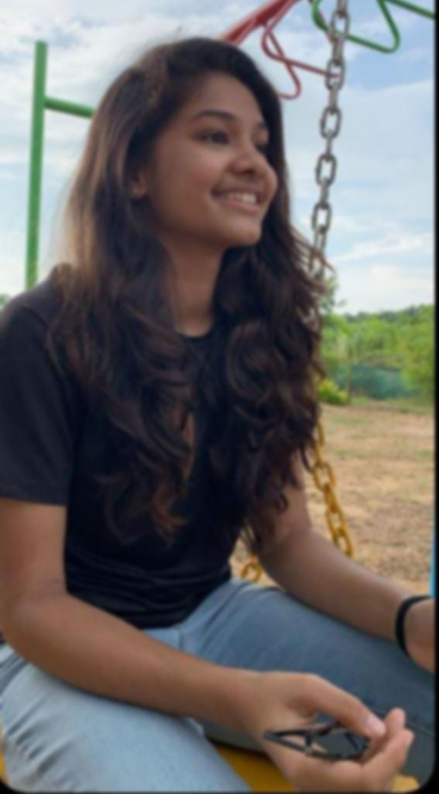

𝗔𝗕𝗢𝗨𝗧 𝗠𝗘
A 17year-old student from HYDERABAD. I'm from AERONAUTICAL DEPARTMENT at MANIPAL UNIVERSITY, BANGLORE.
𝗪𝗘𝗟𝗖𝗢𝗠𝗘 𝗧𝗢 𝗠𝗬 𝗣𝗢𝗥𝗧𝗙𝗢𝗟𝗜𝗢
𝙏𝙝𝙞𝙨 𝙬𝙚𝙗𝙨𝙞𝙩𝙚 𝙙𝙚𝙥𝙞𝙘𝙩𝙨 𝙖𝙡𝙡 𝙩𝙝𝙚 𝙬𝙤𝙧𝙠 𝙩𝙝𝙖𝙩 𝙄 𝙝𝙖𝙫𝙚 𝙘𝙤𝙢𝙥𝙡𝙚𝙩𝙚𝙙 𝙩𝙝𝙧𝙤𝙪𝙜𝙝𝙩𝙤𝙪𝙩 𝙮𝙚𝙖𝙧𝙨. 𝙄𝙩 𝙙𝙞𝙨𝙥𝙡𝙖𝙮𝙨 𝙩𝙝𝙚 𝙜𝙧𝙤𝙬𝙩𝙝 𝙖𝙣𝙙 𝙩𝙝𝙚 𝙥𝙧𝙤𝙜𝙧𝙚𝙨𝙨 𝙩𝙝𝙖𝙩 𝙄 𝙝𝙖𝙫𝙚 𝙢𝙖𝙙𝙚, 𝙖𝙨 𝙬𝙚𝙡𝙡 𝙖𝙨 𝙩𝙝𝙚 𝙖𝙨𝙨𝙞𝙜𝙣𝙢𝙚𝙣𝙩𝙨 𝙄 𝙖𝙢 𝙢𝙤𝙨𝙩 𝙥𝙧𝙤𝙪𝙙 𝙤𝙛 𝙤𝙫𝙚𝙧 𝙩𝙝𝙚 𝙥𝙖𝙨𝙩 𝙢𝙤𝙣𝙩𝙝𝙨, 𝙄 𝙝𝙖𝙫𝙚 𝙥𝙪𝙩 𝙩𝙞𝙢𝙚, 𝙚𝙣𝙚𝙧𝙜𝙮, 𝙖𝙣𝙙 𝙚𝙛𝙛𝙤𝙧𝙩𝙨 𝙞𝙣𝙩𝙤 𝙢𝙮 𝙩𝙖𝙨𝙠𝙨 𝙖𝙣𝙙 𝙝𝙖𝙫𝙚 𝙡𝙚𝙖𝙧𝙣𝙚𝙙 𝙢𝙤𝙧𝙚 𝙩𝙝𝙖𝙣 𝙚𝙫𝙚𝙧 𝙗𝙚𝙘𝙖𝙪𝙨𝙚 𝙤𝙛 𝙞𝙩. 𝙍𝙚𝙛𝙡𝙚𝙘𝙩𝙞𝙣𝙜 𝙤𝙣 𝙢𝙮 𝙬𝙤𝙧𝙠 𝙝𝙖𝙨 𝙨𝙝𝙤𝙬𝙣 𝙢𝙚 𝙝𝙤𝙬 𝙛𝙖𝙧 𝙄 𝙝𝙖𝙫𝙚 𝙘𝙤𝙢𝙚 𝙖𝙨 𝙗𝙤𝙩𝙝 𝙖 𝙨𝙩𝙪𝙙𝙚𝙣𝙩 𝙖𝙣𝙙 𝙖 𝙥𝙚𝙧𝙨𝙤𝙣.
𝐌𝐘 𝐏𝐄𝐑𝐒𝐎𝐍𝐀𝐋 𝐈𝐍𝐓𝐄𝐑𝐄𝐒𝐓𝐒
1>K𝙚𝙚𝙥𝙞𝙣𝙜 𝙪𝙥-𝙩𝙤 𝙙𝙖𝙩𝙚 𝙬𝙞𝙩𝙝 𝙩𝙚𝙘𝙝𝙣𝙤𝙡𝙤𝙜𝙮.
2> M𝙖𝙞𝙣𝙩𝙖𝙞𝙣𝙞𝙣𝙜 𝙥𝙚𝙧𝙨𝙤𝙣𝙖𝙡 𝙝𝙚𝙖𝙡𝙩𝙝 𝙩𝙝𝙧𝙤𝙪𝙜𝙝 𝙥𝙝𝙮𝙨𝙞𝙘𝙖𝙡 𝙖𝙣𝙙 𝙧𝙚𝙘𝙧𝙚𝙖𝙩𝙞𝙤𝙣𝙖𝙡 𝙖𝙘𝙩𝙞𝙫𝙞𝙩𝙮.
3> A𝙙𝙧𝙚𝙣𝙖𝙡𝙞𝙣𝙚-𝙠𝙞𝙘𝙠𝙞𝙣𝙜 𝙖𝙘𝙩𝙞𝙫𝙞𝙩𝙚𝙨 𝙨𝙪𝙘𝙝 𝙖𝙨 𝙥𝙡𝙖𝙮𝙞𝙣𝙜 𝙗𝙖𝙨𝙠𝙚𝙩𝙗𝙖𝙡𝙡 and 𝙨𝙬𝙞𝙢𝙢𝙞𝙣𝙜.
4> V𝙤𝙡𝙪𝙣𝙩𝙚𝙧𝙧𝙞𝙣𝙜 𝙛𝙤𝙧 𝙤𝙧𝙜𝙖𝙣𝙞𝙨𝙖𝙩𝙞𝙤𝙣𝙨 𝙩𝙝𝙖𝙩 𝙬𝙞𝙡𝙡 𝙖𝙡𝙡𝙤𝙬 𝙢𝙚 𝙩𝙤 𝙝𝙚𝙡𝙥 𝙞𝙣𝙙𝙞𝙫𝙞𝙙𝙪𝙖𝙡𝙨 𝙖𝙣𝙙 𝙘𝙤𝙢𝙢𝙪𝙣𝙞𝙩𝙞𝙚𝙨
𝐌𝐘 𝐀𝐂𝐀𝐃𝐄𝐌𝐈𝐂 𝐆𝐎𝐀𝐋𝐒 𝐅𝐎𝐑 𝟐𝟎𝟐0-𝟐𝟎𝟐𝟒
1> G𝙖𝙞𝙣 𝙬𝙤𝙧𝙠/𝙫𝙤𝙡𝙪𝙣𝙩𝙚𝙚𝙧 𝙚𝙭𝙥𝙚𝙧𝙞𝙚𝙣𝙘𝙚 𝙞𝙣 𝙩𝙝𝙚 𝙛𝙞𝙚𝙡𝙙 𝙤𝙛 𝙖𝙚𝙧𝙤 𝙚𝙣𝙜𝙞𝙣𝙚𝙚𝙧𝙞𝙣𝙜,
2> A𝙩𝙩𝙖𝙞𝙣 𝙖 𝙘𝙪𝙢𝙢𝙪𝙡𝙖𝙩𝙞𝙫𝙚 𝙂𝙋𝘼 𝙤𝙛 8 𝙤𝙧 𝙝𝙞𝙜𝙝𝙚𝙧 𝙞𝙣 𝙩𝙝𝙞𝙨 𝙮𝙚𝙖𝙧.
3> I𝙢𝙥𝙧𝙤𝙫𝙞𝙣𝙜 𝙨𝙥𝙚𝙖𝙠𝙞𝙣𝙜 𝙖𝙣𝙙 𝙥𝙧𝙚𝙨𝙚𝙣𝙩𝙞𝙣𝙜 𝙨𝙠𝙞𝙡𝙡𝙨.
4> H𝙖𝙫𝙚 𝙖 𝙜𝙤𝙤𝙙 𝙗𝙖𝙡𝙖𝙣𝙘𝙚 𝙤𝙛 𝙪𝙣𝙞𝙫𝙚𝙧𝙨𝙞𝙩𝙮, 𝙬𝙤𝙧𝙠, 𝙨𝙥𝙤𝙧𝙩𝙞𝙣𝙜, 𝙖𝙣𝙙 𝙨𝙤𝙘𝙞𝙖𝙡 𝙡𝙞𝙛𝙚.
𝐌𝐘 𝐒𝐓𝐑𝐄𝐍𝐆𝐓𝐇 𝐀𝐍𝐃 𝐖𝐄𝐀𝐊𝐍𝐄𝐒𝐒
－𝙄 𝙝𝙖𝙫𝙚 𝙖 𝙙𝙚𝙚𝙥 𝙘𝙤𝙢𝙥𝙖𝙨𝙨𝙞𝙤𝙣 𝙛𝙤𝙧 𝙤𝙩𝙝𝙚𝙧𝙨， 𝙄 𝙘𝙖𝙧𝙚 𝙖𝙗𝙤𝙪𝙩 𝙩𝙝𝙚 𝙬𝙚𝙡𝙡－𝙗𝙚𝙞𝙣𝙜 𝙤𝙛 𝙤𝙩𝙝𝙚𝙧𝙨 𝙖𝙣𝙙 𝙄 𝙚𝙣𝙟𝙤𝙮 𝙡𝙚𝙖𝙧𝙣𝙞𝙣𝙜 𝙣𝙚𝙬 𝙩𝙝𝙞𝙣𝙜𝙨. 𝙢𝙚𝙚𝙩𝙞𝙣𝙜 𝙣𝙚𝙬 𝙥𝙚𝙤𝙥𝙡𝙚， 𝙬𝙤𝙧𝙠𝙞𝙣𝙜 𝙤𝙣 𝙥𝙧𝙤𝙟𝙚𝙘𝙩𝙨 𝙄 𝙖𝙢 𝙖 𝙫𝙚𝙧𝙮 𝙥𝙧𝙤𝙙𝙪𝙘𝙩𝙞𝙫𝙚 𝙥𝙚𝙧𝙨𝙤𝙣 𝙬𝙝𝙚𝙣 𝙖𝙣𝙮 𝙩𝙖𝙨𝙠𝙨 𝙣𝙚𝙚𝙙 𝙩𝙤 𝙗𝙚 𝙘𝙤𝙢𝙥𝙡𝙚𝙩𝙚𝙙． 𝙄 𝙗𝙚𝙡𝙞𝙚𝙫𝙚 𝙩𝙝𝙖𝙩 𝙚𝙫𝙚𝙧𝙮𝙤𝙣𝙚 𝙙𝙚𝙨𝙚𝙧𝙫𝙚𝙨 𝙢𝙖𝙣𝙮 𝙘𝙝𝙖𝙣𝙘𝙚𝙨 𝙖𝙩 𝙜𝙚𝙩𝙩𝙞𝙣𝙜 𝙡𝙞𝙛𝙚 𝙧𝙞𝙜𝙝𝙩 𝙖𝙣𝙙 𝙜𝙚𝙩𝙩𝙞𝙣𝙜 𝙩𝙤 𝙠𝙣𝙤𝙬 𝙬𝙝𝙤 𝙩𝙝𝙚𝙮 𝙖𝙧𝙚 𝙖𝙨 𝙞𝙣𝙙𝙞𝙫𝙞𝙙𝙪𝙖𝙡𝙨.𝘽𝙚𝙞𝙣𝙜 𝙖 𝙨𝙥𝙤𝙧𝙩𝙨𝙥𝙚𝙧𝙨𝙤𝙣 𝙄 𝙗𝙚𝙡𝙞𝙚𝙫𝙚 𝙩𝙝𝙖𝙩 𝙄 𝙘𝙖𝙣 𝙖𝙣𝙖𝙡𝙮𝙯𝙚 𝙚𝙫𝙚𝙧𝙮𝙩𝙝𝙞𝙣𝙜 𝙗𝙚𝙛𝙤𝙧𝙚 𝙙𝙤𝙞𝙣𝙜 𝙤𝙧 𝙘𝙤𝙢𝙞𝙣𝙜 𝙩𝙤 𝙖 𝙘𝙤𝙣𝙘𝙡𝙪𝙨𝙞𝙤𝙣． 𝙄 𝙘𝙤𝙣𝙨𝙞𝙙𝙚𝙧 𝙢𝙮𝙨𝙚𝙡𝙛 𝙖𝙨 𝙖 𝙥𝙚𝙧𝙨𝙤𝙣 𝙤𝙛 𝙞𝙣𝙩𝙚𝙜𝙧𝙞𝙩𝙮， 𝙠𝙞𝙣𝙙 𝙖𝙣𝙙 𝙛𝙖𝙞𝙧， 𝙥𝙤𝙨𝙨𝙚𝙨𝙨 𝙡𝙚𝙖𝙙𝙚𝙧𝙨𝙝𝙞𝙥 𝙨𝙠𝙞𝙡𝙡𝙨， 𝙛𝙤𝙧𝙜𝙞𝙫𝙞𝙣𝙜，𝙝𝙖𝙫𝙚 𝙖 𝙨𝙚𝙣𝙨𝙚 𝙤𝙛 𝙝𝙪𝙢𝙤𝙧， 𝙢𝙮 𝙨𝙩𝙧𝙚𝙣𝙜𝙩𝙝𝙨 𝙤𝙪𝙩 𝙬𝙖𝙮 𝙢𝙮 𝙬𝙚𝙖𝙠𝙣𝙚𝙨𝙨𝙚𝙨．
－－𝙄 𝙙𝙤𝙣＇𝙩 𝙧𝙚𝙖𝙡𝙡𝙮 𝙘𝙖𝙧𝙚 𝙖𝙗𝙤𝙪𝙩 𝙢𝙮 𝙬𝙚𝙖𝙠𝙣𝙚𝙨𝙨𝙚𝙨，𝙗𝙪𝙩 𝙖𝙘𝙘𝙚𝙥𝙩𝙞𝙣𝙜 𝙩𝙝𝙚𝙢 𝙬𝙞𝙡𝙡 𝙝𝙚𝙡𝙥 𝙢𝙚 𝙢𝙤𝙫𝙚 𝙛𝙤𝙧𝙬𝙖𝙧𝙙 𝙞𝙣 𝙡𝙞𝙛𝙚 𝙖𝙣𝙙 𝙝𝙤𝙥𝙚𝙛𝙪𝙡𝙡𝙮 𝙛𝙞𝙣𝙙𝙤𝙪𝙩 𝙝𝙤𝙬 𝙩𝙤 𝙢𝙖𝙨𝙩𝙚𝙧 𝙩𝙝𝙚𝙢
𝙄 𝙙𝙤 𝙗𝙚𝙡𝙞𝙚𝙫𝙚 𝙩𝙝𝙖𝙩 𝙄 𝙖𝙢 𝙤𝙥𝙚𝙣 𝙩𝙤 𝙚𝙭𝙥𝙡𝙤𝙧𝙞𝙣𝙜 𝙖𝙣𝙙 𝙙𝙞𝙨𝙘𝙤𝙫𝙚𝙧𝙞𝙣𝙜 𝙣𝙚𝙬 𝙩𝙝𝙞𝙣𝙜𝙨， 𝙩𝙝𝙤𝙨𝙚 𝙩𝙝𝙞𝙣𝙜𝙨 𝙬𝙤𝙪𝙡𝙙 𝙝𝙖𝙫𝙚 𝙩𝙤 𝙗𝙚 𝙨𝙤𝙢𝙚𝙩𝙝𝙞𝙣𝙜 𝙩𝙝𝙖𝙩 𝙄 𝙛𝙞𝙣𝙙 𝙞𝙣𝙩𝙚𝙧𝙚𝙨𝙩𝙞𝙣𝙜 𝙖𝙣𝙙 𝙣𝙤𝙩 𝙗𝙤𝙧𝙞𝙣𝙜． 𝙄 𝙘𝙖𝙣 𝙖𝙙𝙢𝙞𝙩 𝙩𝙝𝙖𝙩 𝙄 𝙬𝙞𝙡𝙡 𝙗𝙚𝙘𝙤𝙢𝙚 𝙗𝙤𝙧𝙚𝙙,
𝙢𝙚𝙖𝙣𝙞𝙣𝙜 𝙄 𝙡𝙤𝙨𝙚 𝙛𝙤𝙘𝙪𝙨， 𝙞𝙛 𝙬𝙝𝙖𝙩𝙚𝙫𝙚𝙧 𝙩𝙝𝙚 𝙥𝙧𝙤𝙟𝙚𝙘𝙩 𝙞𝙨 𝙗𝙚𝙘𝙤𝙢𝙚𝙨 𝙪𝙣𝙞𝙣𝙩𝙚𝙧𝙚𝙨𝙩𝙞𝙣𝙜．𝙏𝙝𝙚𝙣 𝙄 𝙢𝙖𝙮 𝙜𝙞𝙫𝙚 𝙞𝙩 𝙪𝙥 𝙛𝙤𝙧 𝙖 𝙬𝙝𝙞𝙡𝙚 𝙖𝙣𝙙 𝙧𝙚𝙩𝙪𝙧𝙣 𝙩𝙤 𝙞𝙩 𝙤𝙧 𝙄 𝙢𝙖𝙮 𝙡𝙚𝙖𝙫𝙚 𝙖𝙣𝙙 𝙣𝙤𝙩 𝙧𝙚𝙩𝙪𝙧𝙣 𝙩𝙤 𝙞𝙩． 𝙄𝙛 𝙄 𝙘𝙝𝙤𝙤𝙨𝙚 𝙣𝙤𝙩 𝙩𝙤 𝙧𝙚𝙩𝙪𝙧𝙣 𝙩𝙤 𝙩𝙝𝙖𝙩 𝙥𝙧𝙚𝙫𝙞𝙤𝙪𝙨 𝙥𝙧𝙤𝙟𝙚𝙘𝙩， 𝙚𝙫𝙚𝙣𝙩𝙪𝙖𝙡𝙡𝙮 𝙞𝙩 𝙬𝙞𝙡𝙡 𝙗𝙚𝙘𝙤𝙢𝙚 𝙖 𝙛𝙖𝙞𝙡𝙪𝙧𝙚 𝙞𝙣 𝙢𝙮 𝙚𝙮𝙚𝙨 𝙖𝙣𝙙 𝙢𝙖𝙮 𝙘𝙖𝙪𝙨𝙚 𝙢𝙚 𝙩𝙤 𝙛𝙚𝙚𝙡 𝙙𝙚𝙥𝙧𝙚𝙨𝙨𝙚𝙙
𝙞𝙛 𝙄 𝙙𝙤𝙣’𝙩 𝙩𝙧𝙮 𝙖𝙣𝙙 𝙤𝙫𝙚𝙧𝙘𝙤𝙢𝙚 𝙞𝙩 𝙗𝙮 𝙘𝙤𝙢𝙥𝙡𝙚𝙩𝙞𝙣𝙜 𝙞𝙩．
ACHIEVEMENTS
𝐓𝐡𝐢𝐬 𝐏𝐨𝐫𝐭𝐟𝐨𝐥𝐢𝐨 𝐨𝐟 𝐀𝐜𝐡𝐢𝐞𝐯𝐞𝐦𝐞𝐧𝐭 𝐛𝐫𝐢𝐧𝐠𝐬 𝐭𝐨𝐠𝐞𝐭𝐡𝐞𝐫 𝐭𝐡𝐞 𝐬𝐭𝐮𝐝𝐞𝐧𝐭𝐬’ 𝐚𝐜𝐚𝐝𝐞𝐦𝐢𝐜 𝐩𝐞𝐫𝐟𝐨𝐫𝐦𝐚𝐧𝐜𝐞, 𝐂𝐡𝐚𝐥𝐥𝐞𝐧𝐠𝐞 𝐏𝐫𝐨𝐣𝐞𝐜𝐭𝐬, 𝐜𝐚𝐫𝐞𝐞𝐫𝐬 𝐬𝐮𝐩𝐩𝐨𝐫𝐭 𝐚𝐧𝐝 𝐚𝐝𝐯𝐢𝐜𝐞 (𝐢𝐧𝐜𝐥𝐮𝐝𝐢𝐧𝐠 𝐰𝐨𝐫𝐤 𝐞𝐱𝐩𝐞𝐫𝐢𝐞𝐧𝐜𝐞)𝐚𝐧𝐝 𝐞𝐱𝐭𝐫𝐚𝐜𝐮𝐫𝐫𝐢𝐜𝐮𝐥𝐚𝐫 𝐚𝐜𝐭𝐢𝐯𝐢𝐭𝐢𝐞𝐬.<𝐛𝐫> 𝐈'𝐦 𝐚 𝐬𝐭𝐚𝐭𝐞 𝐥𝐞𝐯𝐞𝐥 𝐬𝐰𝐢𝐦𝐦𝐞𝐫 𝐚𝐧𝐝 𝐚𝐬 𝐬𝐚𝐢𝐝 𝐈'𝐦 𝐦𝐨𝐫𝐞 𝐢𝐧𝐭𝐨 𝐩𝐡𝐲𝐬𝐢𝐜𝐚𝐥 𝐚𝐧𝐝 𝐫𝐞𝐜𝐫𝐞𝐚𝐭𝐢𝐨𝐧𝐚𝐥 𝐚𝐯𝐭𝐢𝐯𝐢𝐭𝐢𝐞𝐬 𝐈 𝐰𝐚𝐬 𝐚𝐥𝐬𝐨 𝐜𝐚𝐩𝐭𝐚𝐢𝐧 𝐟𝐨𝐫 𝐦𝐲 𝐜𝐨𝐥𝐥𝐞𝐠𝐞 𝐛𝐚𝐬𝐤𝐞𝐭𝐛𝐚𝐥𝐥 𝐭𝐞𝐚𝐦 𝐚𝐧𝐝 𝐰𝐨𝐧 𝐜𝐨𝐮𝐩𝐥𝐞 𝐨𝐟 𝐦𝐞𝐝𝐚𝐥𝐬 𝐚𝐥𝐥 𝐭𝐡𝐨𝐬𝐞 𝐲𝐞𝐚𝐫𝐬.𝐈 𝐡𝐚𝐯𝐞 𝐚𝐥𝐰𝐚𝐲𝐬 𝐥𝐨𝐯𝐞𝐝 𝐭𝐡𝐞 𝐭𝐡𝐨𝐮𝐠𝐡𝐭 𝐨𝐟 𝐛𝐞𝐜𝐨𝐦𝐢𝐧𝐠 𝐚𝐧 𝐚𝐞𝐫𝐨 𝐞𝐧𝐠𝐢𝐧𝐞𝐞𝐫 𝐚𝐧𝐝 𝐈'𝐦 𝐫𝐞𝐚𝐥𝐥𝐲 𝐩𝐚𝐬𝐬𝐢𝐨𝐧𝐚𝐭𝐞 𝐚𝐛𝐨𝐮𝐭 𝐦𝐲 𝐢𝐧𝐭𝐞𝐫𝐞𝐬𝐭𝐬. 𝐈'𝐦 𝐚𝐥𝐰𝐚𝐲𝐬 𝐫𝐞𝐚𝐝𝐲 𝐭𝐨 𝐥𝐞𝐚𝐫𝐧 𝐚𝐧𝐝 𝐟𝐚𝐜𝐞 𝐜𝐡𝐚𝐥𝐥𝐞𝐧𝐠𝐞𝐬 𝐚𝐧𝐝 𝐛𝐞𝐢𝐧𝐠 𝐚 𝐬𝐨𝐜𝐢𝐚𝐥 𝐩𝐞𝐫𝐬𝐨𝐧 𝐈 𝐭𝐨𝐨𝐤 𝐩𝐚𝐫𝐭 𝐢𝐧 𝐫𝐨𝐭𝐚𝐫𝐲 𝐜𝐥𝐮𝐛𝐬, 𝐝𝐞𝐛𝐚𝐭𝐞𝐬, 𝐞𝐬𝐬𝐚𝐲 𝐜𝐨𝐦𝐩𝐞𝐭𝐢𝐭𝐢𝐨𝐧𝐬, 𝐞𝐦𝐩𝐨𝐰𝐞𝐫𝐦𝐞𝐧𝐭 𝐜𝐥𝐮𝐛𝐬. 𝐀𝐬 𝐬𝐚𝐢𝐝 𝐉𝐨𝐲 𝐢𝐬 𝐚𝐧 𝐞𝐧𝐞𝐫𝐠𝐲 𝐥𝐞𝐯𝐞𝐥 𝐭𝐡𝐚𝐭 𝐦𝐚𝐤𝐞𝐬 𝐲𝐨𝐮 𝐟𝐞𝐞𝐥 𝐜𝐨𝐦𝐩𝐚𝐬𝐬𝐢𝐨𝐧𝐚𝐭𝐞. 𝐈𝐧 𝐭𝐡𝐢𝐬 𝐬𝐭𝐚𝐭𝐞, 𝐞𝐯𝐞𝐫𝐲𝐭𝐡𝐢𝐧𝐠 𝐢𝐬 𝐢𝐥𝐥𝐮𝐦𝐢𝐧𝐚𝐭𝐞𝐝 𝐛𝐲 𝐭𝐡𝐞 𝐞𝐱𝐪𝐮𝐢𝐬𝐢𝐭𝐞 𝐛𝐞𝐚𝐮𝐭𝐲 𝐚𝐧𝐝 𝐩𝐞𝐫𝐟𝐞𝐜𝐭𝐢𝐨𝐧 𝐨𝐟 𝐜𝐫𝐞𝐚𝐭𝐢𝐨𝐧. 𝐈 𝐚𝐥𝐰𝐚𝐲𝐬 𝐡𝐚𝐝 𝐭𝐡𝐚𝐭 𝐞𝐧𝐭𝐡𝐮𝐬𝐢𝐚𝐬𝐦 𝐚𝐧𝐝 𝐜𝐨𝐮𝐫𝐚𝐠𝐞 𝐚𝐧𝐝 𝐈 𝐚𝐥𝐰𝐚𝐲𝐬 𝐥𝐨𝐯𝐞𝐝 𝐚𝐫𝐭.𝐄𝐯𝐞𝐫 𝐬𝐢𝐧𝐜𝐞 𝐈 𝐰𝐚𝐬 𝐚 𝐤𝐢𝐝 𝐈 𝐩𝐚𝐫𝐭𝐢𝐜𝐢𝐩𝐚𝐭𝐞𝐝 𝐢𝐧 𝐦𝐚𝐧𝐲 𝐜𝐨𝐦𝐩𝐞𝐭𝐢𝐭𝐢𝐨𝐧𝐬 𝐚𝐧𝐝 𝐰𝐨𝐧 𝐝𝐢𝐬𝐭𝐫𝐢𝐜𝐭,𝐬𝐭𝐚𝐭𝐞 𝐥𝐞𝐯𝐞𝐥 𝐚𝐧𝐝 𝐚𝐥𝐬𝐨 𝐠𝐨𝐭 𝐬𝐞𝐥𝐞𝐜𝐭𝐞𝐝 𝐟𝐨𝐫 𝐧𝐚𝐭𝐢𝐨𝐧𝐚𝐥𝐬. 𝐈 𝐬𝐭𝐢𝐥𝐥 𝐤𝐞𝐞𝐩 𝐦𝐲 𝐢𝐧𝐭𝐞𝐫𝐞𝐬𝐭𝐬 𝐢𝐧 𝐚𝐥𝐥 𝐭𝐡𝐞𝐬𝐞 𝐚𝐧𝐝 𝐟𝐨𝐥𝐥𝐨𝐰 𝐦𝐲 𝐯𝐢𝐬𝐢𝐨𝐧𝐬 𝐚𝐧𝐝 𝐠𝐨𝐚𝐥𝐬 𝐭𝐢𝐥𝐥 𝐝𝐚𝐭𝐞.CONTACT DETAILS
GET IN TOUCH.
please fill out the quick form and I will be in touch with lightening speed.